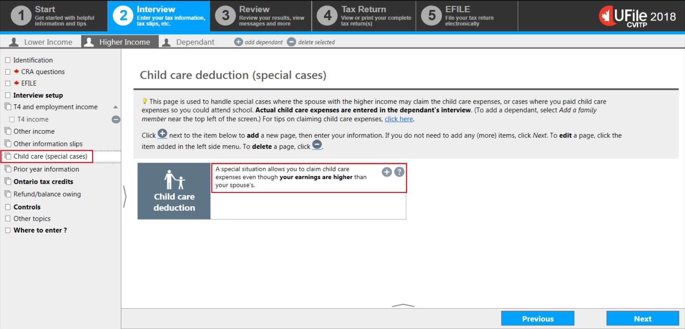
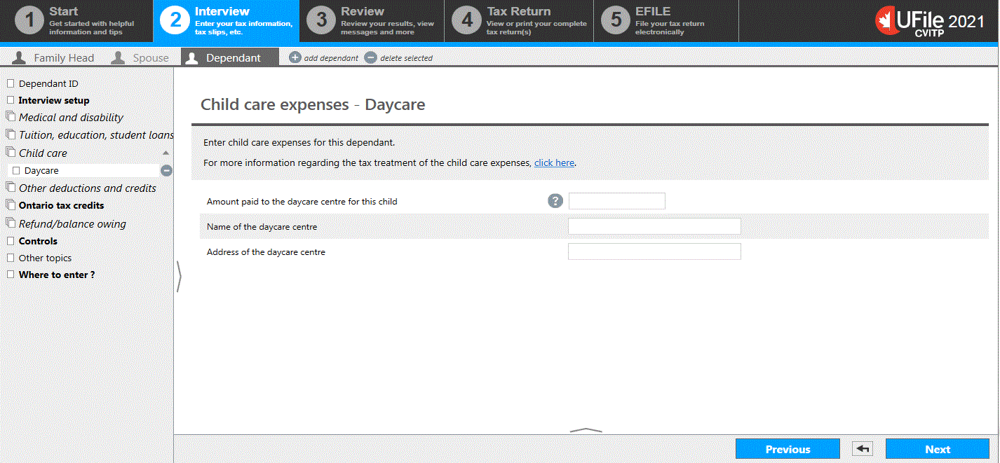

It is important to enter the child care expense paid for a dependant in their respective profile.
Enter the duration of the special case situation in the profile of the parent with the higher income.
Depending on the individual’s tax situation, choose one of the following sections in the menu of the software:
- Child care expenses
- Special case situation
Interview setup (Family head, spouse) – Child care (special cases)

- select the Interview setup from the left side menu
- in the Parents and children section, check the box next to Child care (special cases) and click Next
click next step
Child care expenses incurred for this dependant

If applicable, UFile will automatically generate Child care on the left side menu once the Dependant ID is completed
Instructions for Daycare (including day camp) expenses
- select Child care from the left side menu of the dependant’s profile
- click the + sign next to Daycare (including day camp)
- includes expenses for daycare services, day camps (if their primary goal is to care for children), day sports school (if their primary goal is to care for children), fees for child care services paid to educational institutions
- includes expenses for daycare services, day camps (if their primary goal is to care for children), day sports school (if their primary goal is to care for children), fees for child care services paid to educational institutions
click next step
Instructions for Camp (dependant stayed overnight) expenses
click next step
Instructions for Boarding school expenses
click next step
Instructions for Babysitter expenses
click next step
Child care deduction (special cases)
- select Child care (special cases) from the left side menu
- click the + sign next to A special situation allows you to claim child care expenses even though your earnings are higher than your spouse’s.
click next step
Higher earner eligible to claim the child care deduction

- for each special case that is relevant to the individual and their spouse or common-law partner’s situation, in the field next to them, enter the number of weeks during the year that it lasted
click next step
Child care expenses - Daycare
- enter the appropriate child care expense details
- click Next
Child care expenses - Camp

- enter the appropriate child care expense details
The software will automatically reduce the maximum amount for this type of child care expense if it exceeds the allowable amount set by the government.
- click Next
Child care expenses – Boarding school

- enter the appropriate child care expense details
The software will automatically reduce the maximum amount for this type of child care expense if it exceeds the allowable amount set by the government.
- click Next
Child care expenses - Babysitter

- enter the appropriate child care expense details
- click Next